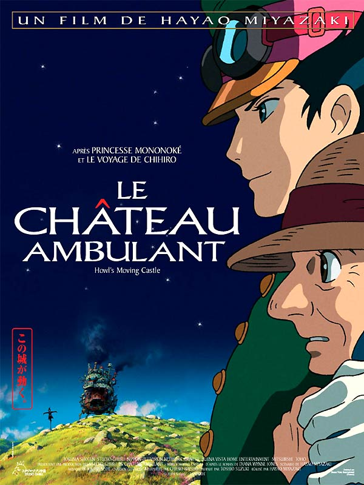
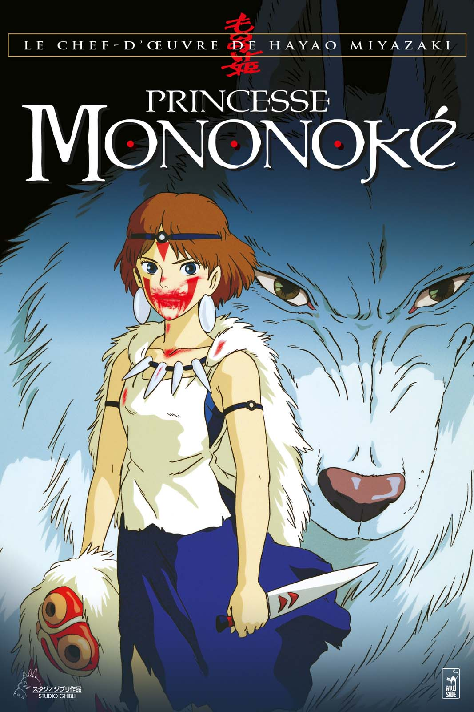

Âgée de 18 ans, Sophie travaille dans une boutique de chapeaux. Après sa rencontre avec Hauru, la sorcière des landes la transforme en vieille dame de 90 ans. Elle décide donc de se faire embaucher comme femme de ménage dans le château ambulant et retrouvera peu à peu son véritable âge au cours du film.

Un sanglier transformé en démon dévastateur en sort et attaque le village d'Ashitaka, futur chef du clan Emishi. Touché par le sanglier qu'il a tué, celui-ci est forcé de partir à la recherche du dieu Cerf pour lever la malédiction qui lui gangrène le bras. Date de sortie du film au Japon : 12 juillet 1997.